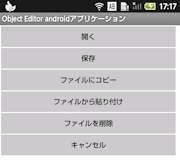

・初めに
Objedit-androidは絵を描く感覚でプログラムを作成する開発ツールです。
数行〜数十行のソースコードを一つの部品として表示、
部品の間のデータの流れを信号線として表示し、電子回路を設計する要領でプログラムを作成していきます
詳しくは以下を参照してください。
・TerminalIDE
本アプリを動作させるためにはこのアプリが必要になります。
(むしろこれが本体だと言っても過言ではありません)
https://github.com/patilswapnilv/TerminalIDE
Terminal IDEはコマンドラインで操作する非常に高機能な開発アプリで以下の機能が含まれています。
- javac
- java
- dx
- proguard
- aapt
- apkbuilder
- signer
- ssh
- bash
- busybox
- vim
- nano
- gcc
- git
Terminal IDEの実行画面
インストールの前に、上記のリンクをクリックしてインストールファイル(.apk)をダウンロードしてSDカードにコピーしておいて下さい。
・インストール
インストールファイル"Objedit-debug.apk"をファイルマネージャー等のファイル管理アプリで開いて下さい。
そうするとインストールが始まりさらに実行を進めていくと
次のような画面が現れますので先ほどコピーしたTerminal IDEのインストールファイルをタッチして下さい、システムのインストールが始まります。
しばらくして次のような画面になれば、インストールは完了です。
・プログラミング
プログラミングは基本的には画面上部のアイコンをタッチしてオブジェクト(図形)を張り付けて、オブジェクトを信号線で接続することで進めていきます。
以下はそのアイコンの説明です
※それぞれの画面やアイコン、ボタンは指でスライドさせて動かすことができます。
・新規メニュー
メニューで選択した言語を新規作成の状態で開きます。
・ファイルメニュー

開く・・・・・・・・・・・プロジェクトを開きます
保存・・・・・・・・・・・プロジェクトを保存します
（ファイル名はオブジェクト名と同一です）
ファイルにコピー・・・・・ここをタッチしてオブジェクトをタッチするとタッチ したオブジェクトが保存されます。
ファイルから貼り付け・・・ここをタッチ出てきたファイル選択画面でファイルを 選択して画面をタッチすると、タッチした画面にファ イルのオブジェクトが貼り付けられます。
ファイルを削除・・・・・・ここをタッチしてファイル選択画面でファイルを選択 すると選択されたファイルが削除されます。
・キーボード操作
キーボードの"MENU"または"VOLUME"ボタンを押すとメインメニューが表示されます。
・メインメニュー
メインメニューは編集できるようになっています。
・メニュー編集画面
編集後

うまく使えば面倒なコマンド入力をタッチ一回で済ませることができるので
ぜひ活用して下さい。
・コンソール
わざわざメニュー登録するまでもない場合は直接コマンド入力することもできます。
・GUIデザイナー
androidプログラミングでどうしても避けて通れないのがGUIデザインでしょう。
スマートフォン等の狭い画面でもできるだけ簡単に操作できるようにしてみました。
画面の左半分が編集画面で右半分がプロパティ設定画面となります。
・編集画面
移動モードのときはタッチした位置に移動して
サイズ変更モードのときは大きさが変わります。
※キーボードのカーソル移動キーを使うと
位置や大きさの微調整ができます。
カーソル移動キー以外のキーが押されると
モードが解除されて初期状態になります。
・プロパティ設定画面
※プロパティ値にはキーボード入力が必要なものがあります。
編集が終わったら変換ボタンをタッチしてGUIのレイアウト情報をオブジェクトに
変換します。
・コンパイル
プログラム作成が終了したらコンパイルします。
・実行
コンパイルでエラーが出なくなったら実行アイコンをタッチします。
・ビルド方法
本プログラムをビルドするためにはObjectEditor が動作する環境が必要です。
その方法は極めて簡単でダウンロードしたファイルをフォルダごと全てObjectEditor直下の
ディレクトリにコピーした後、ObjectEditorを起動してファイル"objedit_android.prj"を開いて
コンパイルボタンをクリックするだけです。
・終わりに
ここまで読んでいただき、ありがとうございました
貴方の快適なプログラミングライフを祈っております。